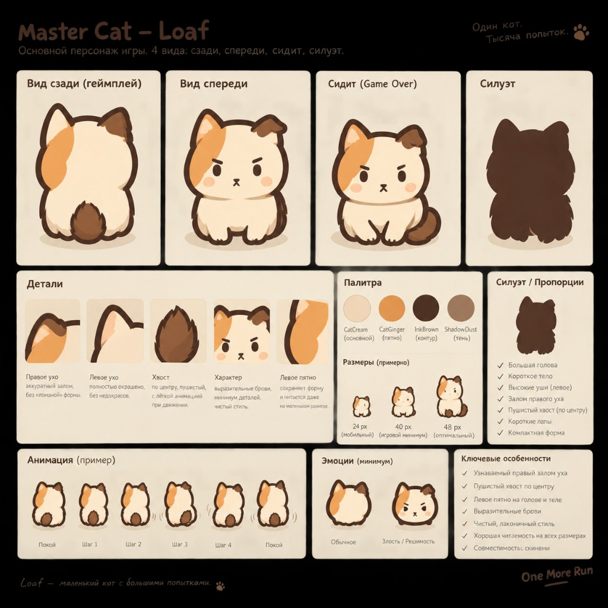

Loaf: match the sheet, especially rear
The SVG is traced from your master sheet. Rear view first: round loaf, two whole ears, left ginger patch, central fluffy oval tail, short paws. Palette stays CatCream / CatGinger / InkBrown / ShadowDust.
